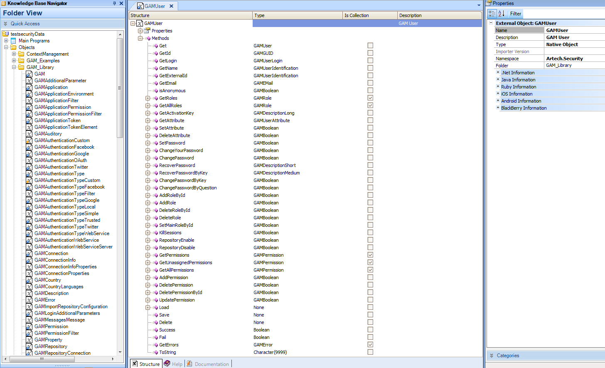

GAM users are stored in User GeneXus Access Manager database table. The information of the credentials stored in User table depends on the GAM Authentication Types used in GAM. In case of GAM Local Authentication Type the credentials of the user are stored in GAM User table, and this is the only case in which they are accesible by GAM. In case of GAM External Authentication Type, GAM Twitter Authentication Type, GAM Google Authentication Type (X Evolution 3 upgrade 3 and prior) or GAM Facebook Authentication Type (X Evolution 3 upgrade 3 and prior) the credentials of the user belong to the external identity providers. Depending on the model design of the application, the information of the user can reside entirely in the GAM User table or can be in any table of the application, in which case you need to map the information so as GAM can solve the security issues despite the user information is located in a table outside of GAM. See HowTo: Mapping Application Users to GAM Users for details on this topic. User identityA user is identified by a GUID in User GAM Table. Besides, "User Namespace (UserNameSpace) \ Authentication Type (UserAuthTypeName) \User Name (UserName)" is a Candidate Key. When created, the user takes the Repository Namespace where he is defined. Users can be referenced by other properties, like their name, login, or nick name, as explained here: GAM API: How to reference GAM users. Adding usersDespite the database being case sensitive, GAM does not support case sensitivity for the username. If you try to insert a user named "Jhon" (capital letters) and another user whose username is "jhon" already exists, an error will be thrown: Username already exist. (GAM49). GAMUser external object The GAMUser external object (imported when GAM is activated or updated) is used to manage the GAM Users in the application.  GAMUser object is part of the GAM API and allows to handle properties and perform different actions on the users. Some examples on how to use the GAM API to manage user relations are detailed in the following links: See the GAM Examples distributed, in particular the GAMExampleWWUsers and GAMExampleEntryUser objects to get more examples. User relation to GAM Roles, GAM Repository and GAM Permissions
User propertiesThe User table structure allows to store UserFirstName, UserLastName, UserBirthday, UserGender, UserPhone, etc. If you need to store other information than the information provided by the User table structure, you can extend the User table properties using an approach based on OAV : see Extensibility of GAM entity properties and HowTo: GAM User table extensibility: multivalued attributes. Note:When GAM is activated for the first time (Enable Integrated Security property is set to TRUE), the user "admin" is created with prototyping purposes. You can login using "admin" in the GAM Web Backoffice in order to start working, and afterwards create new users for your application. See GAM Getting Started for more details. See AlsoImport Users - GAM Deploy Tool HowTo: Filtering Data by User Using the GAM API
|